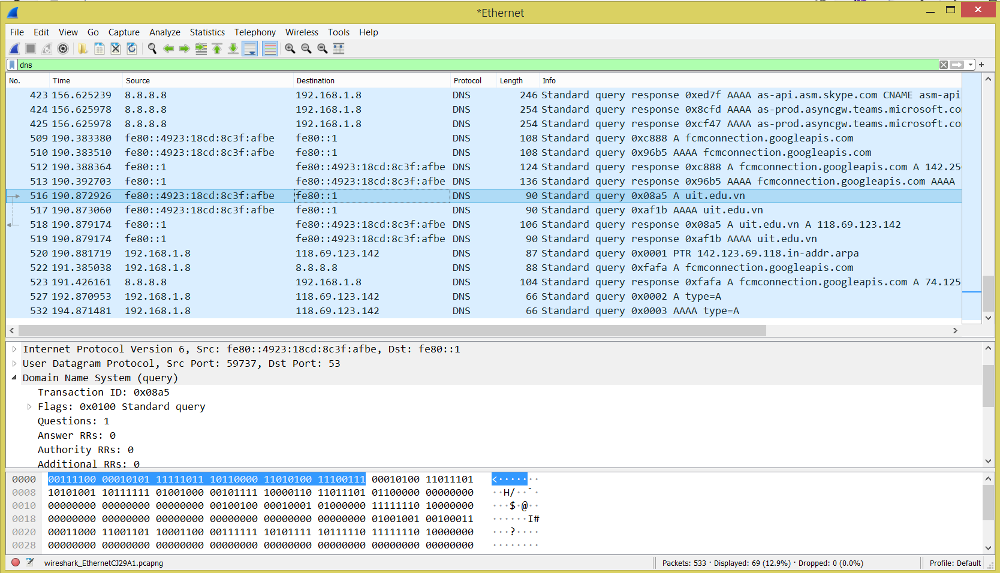

1. Bắt các gói tin truy vấn và phản hồi của DNS
Sinh viên thực hiện truy vấn DNS và dùng Wireshark để bắt các gói tin
UDP (User Datagram Protocol) là loại giao thức phi kết nối, không đảm bảo tính tin cậy khi truyền dữ liệu và không có cơ chế phục hồi dữ liệu
DNS là một trong những giao thức tầng ứng dụng sử dụng UDP làm dịch vụ ở Tầng Vận chuyển (Transport)
Sinh viên hãy thực hiện các nhiệm vụ sau đây để bắt và phân tích đặc trưng của các gói tin UDP
1.1 Ghi lại thông tin cấu hình IP của PC
Sử dụng lệnh ipconfig / all trong giao diện Command line của bạn để tìm và ghi lại các thông tin sau vào bảng bên dưới:
Địa chỉ MAC và IP của card mạng mà sinh viên sử dụng để giao tiếp qua mạng (NIC)
Địa chỉ IP của cổng mặc định được chỉ định (Default gateway)
Địa chỉ IP máy chủ DNS được chỉ định cho PC
| IP address |
|
| MAC address |
|
| Default gateway IP address |
|
| DNS Server IP address |
|
1.2 Sử dụng Wireshark, bắt các gói tin truy vấn và phản hồi của DNS
Thực hiện các bước sau:
• Bước 1: Khởi động phần mềm Wireshark
• Bước 2: Chọn capture từ Interface đã ghi lại trong phần 1
• Bước 3: Từ Command Line, gõ nslookup google.com (hoặc 1 domain nào khác).
• Bước 4: Dừng bắt gói tin và lưu lại dưới định dạng MSSV-UDP.pcapng
2. Phân tích các gói tin UDP
Sinh viên sẽ quan sát các gói tin UDP được tạo ra khi giao tiếp với 1 DNS Server để truy vấn địa chỉ IP cho 1 domain
Mở file MSSV-UDP.pcapng và nhập "dns" vào cửa sổ display-filter để hiển thị các thông điệp cần theo dõi
Trả lời các câu hỏi sau kèm theo hình ảnh minh chứng kết quả từ Wireshark:
- Tại danh sách các gói tin bắt được, định vị gói tin truy vấn domain google.com (hoặc domain tự chọn).
Gợi ý: chứa “standard query” và “A www.google.com”
- Xác định gói tin phản hồi của truy vấn trên? Từ thông điệp phản hồi, ghi lại địa chỉ IP của domain google.com
- Chọn một gói tin DNS, xác định các trường (field) có trong UDP header và giải thích ý nghĩa của mỗi trường đó?
Gợi ý: Xem tại phần User Datagram Protocol
- Qua thông tin hiển thị của Wireshark, xác định độ dài (tính theo byte) của mỗi trường trong UDP header?
- Giá trị của trường Length trong UDP header là độ dài của gì? Chứng minh nhận định này bằng thông tin hiển thị của Wireshark?
Gợi ý: Quan sát kích thước payload (DNS Data) và kích thước UDP Header
- Giá trị lớn nhất có thể có của port nguồn (Source port)?
Gợi ý: Dựa vào kích thước (bytes) của trường Source port
- Số bytes lớn nhất mà payload (phần chứa dữ liệu gốc, không tính UDP header và IP header) của UDP có thể chứa?
Gợi ý: Dựa vào kích thước của trường Length trong UDP header và giá trị lớn nhất có thể thể hiện?
- Quan sát 2 gói tin tìm được ở Câu 1 và 2, mô tả mối quan hệ giữa các địa chỉ IP và các port của 2 gói tin này.
Gợi ý: Quan sát Source (IP, Port) và Destination (IP, Port) của 2 gói tin trên

Ví dụ về phân tích gói tin truy vấn DNS
3. Upload file thông qua Web Browser (HTTP) và bắt các gói tin TCP
Sinh viên thử nghiệm upload file thông qua Trình duyêt để bắt các gói tin HTTP (TCP)
Website với địa chỉ sau:
http://gaia.cs.umass.edu/wireshark-labs/TCP-wireshark-file1.html
cho phép người dùng tải lên (upload) nội dung. Chúng ta sẽ xem xét điều gì xảy ra khi upload một file dữ liệu.
Thực hiện các bước sau:
•
Bước 1: Truy cập
http://gaia.cs.umass.edu/wireshark-labs/alice.txt và lấy bản sao ASCII của Alice in Wonderland. Lưu trữ tệp này trên máy tính của bạn
•
Bước 2: Khởi động Wireshark và bắt đầu bắt gói tin
•
Bước 3: Từ trình duyệt, truy cập đến địa chỉ sau:
http://gaia.cs.umass.edu/wireshark-labs/TCP-wireshark-file1.html
•
Bước 4: Sử dụng nút
Browse/Choose File trong trang web để chọn file alice.txt vừa download
•
Bước 5: Nhấn nút Upload alice.txt file để upload file lên server. Khi file đã được upload, một tin nhắn chúc mừng sẽ xuất hiện trên trình duyệt
•
Bước 6: Dừng bắt gói tin và lưu lại dưới định dạng
MSSV-TCP.pcapng
4. Phân tích các gói tin TCP
Sinh viên sẽ quan sát các gói tin TCP được tạo ra khi giao tiếp với HTTP Server để upload một nội dung
Mở file và nhập “http” vào cửa sổ display-filter để hiển thị các thông điệp HTTP.
Chọn 1 gói tin, chọn chuột phải, chọn Follow > TCP Stream
- Xác định Địa chỉ và cổng nguồn (Source Port) mà client sử dụng để chuyển tệp sang gaia.cs.umass.edu là gì?
Gợi ý: Chọn một thông điệp HTTP từ Client gửi lên Server và khám phá các chi tiết của gói tin TCP được sử dụng để mang thông điệp HTTP này
- Địa chỉ IP của gaia.cs.umass.edu là gì? Trên số cổng nào nó nhận các dữ liệu của tệp alice.txt
- Định vị TCP SYN segment (gói tin TCP có cờ SYN) khởi tạo kết nối TCP giữa client và server? Thành phần nào trong segment cho ta biết segment đó là TCP SYN segment?
Gợi ý: Quan sát trường Flags
- TCP SYN segment ở trên có sequence number là bao nhiêu?
- Tìm sequence number của gói tin SYN/ACK segment được gửi bởi server đến client để trả lời cho SYN segment ở trên?
- Tìm giá trị của Acknowledgement trong SYN/ACK segment?
Làm sao server có thể xác định giá trị đó?
Thành phần nào trong segment cho ta biết segment đó là SYN/ACK segment?